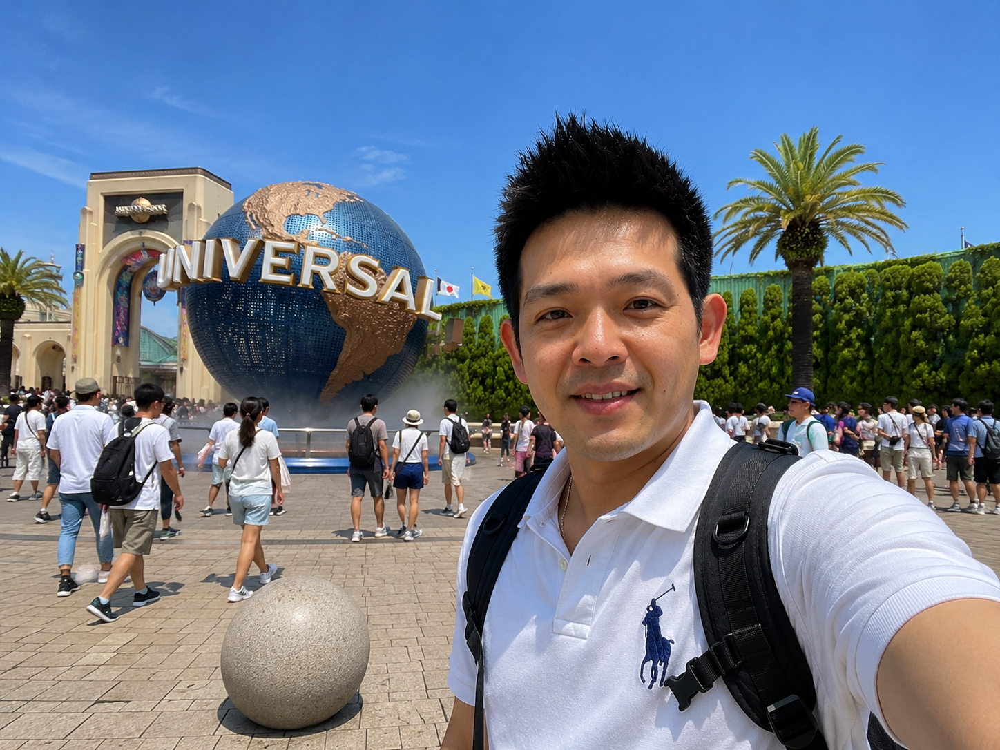

💡 實戰攻略精華
大阪環球影城（USJ）是關西最受歡迎的主題樂園，從超級任天堂樂園到哈利波特魔法世界，再到最新的咒術迴戰設施，這篇幫你用最高效率玩遍所有園區。我會分享：
- ✅ 各種門票如何選擇與購買最便宜
- ✅ 必玩設施排行榜與排隊時間
- ✅ 快速通關券值不值得買
- ✅ 一整天的最佳遊玩路線安排
- ✅ 馬里奧區完整攻略
- ✅ 住宿與交通推薦
門票種類解析
一日護照（1-Day Passport） — ¥4,200-9,700，依淡旺季浮動。含所有園區基本遊樂設施。建議提前在 Klook 購買電子票，價格通常比現場便宜 15-20%。
快速通關券（Express Pass） — ¥2,000-9,000，可免除指定設施排隊時間。有 4 項、7 項、VIP 不同版本。VIP 版本含餐飲與設施無限次。
超級任天堂樂園通行證 — ¥2,000-5,000，必須另外購買，不含在一般門票內。推薦開園直衝馬里奧區，或購買快速通關券 7 版本（包含馬里奧）。
必玩設施 Top 10

🔥 超人氣（排隊 2-3 小時）
① 飛天翼龍（過山車）— 全園區最刺激，排隊最長，建議開園直衝
② 咒術迴戰 — 新園區，人氣爆表
③ 好萊塢夢幻雲霄飛車 — 經典設施
④ 蜘蛛人驚魂歷險 — 4D 體驗
⑤ 哈利波特禁忌之旅 — 魔法世界沉浸式
⭐ 推薦（排隊 30-60 分鐘）
⑥ 迷你兵團鬧翻天 — 小小兵樂園入口
⑦ 大白鯊 — 驚悚冒險
⑧ 浴火赤子情 — 感人故事線
⑨ 飛天史努比 — 家庭必玩
⑩ 小小兵樂園 — 適合拍照
這次去 USJ 我直接在 Klook 上買 電子票（QR Code 直接入場），不用換票、不用排隊，超方便！如果你想省時間，也可以加購 Express Pass 快速通關券，直接在 Klook 購買會比現場便宜。
🔗 立即查看 USJ 門票最新優惠（我自己是預算旅行者，會優先選擇方便又不用排隊的票券，Klook 上購買真的很快！）
最佳遊玩路線（1 日行程）
08:00 開園前到場排隊 — 入園後直奔任天堂樂園（建議先在 Klook 購買通行證）
09:00-12:00 任天堂樂園 — 耀西冒險、庫巴挑戰 Mario Kart、能量手環互動
12:00-14:00 哈利波特魔法世界 — 禁忌之旅、鷹馬飛行、逛霍格華茲城堡
14:00-16:00 好萊塢園區 — 飛天翼龍、好萊塢雲霄飛車
16:00-18:00 環球奇境＋小兵團 — 適合全家同樂
快速通關券哪種最划算？
一般遊客推薦
快速通關券 4（¥2,000-4,000），選擇 4 項最熱門的設施，省下排隊時間 2-4 小時，性價比最高。適合只想玩幾個重點設施的人。
深度玩家推薦
快速通關券 7（¥4,000-6,000），一次玩遍所有熱門設施，節省排隊總時間約 6 小時。包含馬里奧區，絕對值得。
🎢 環球影城攻略補充
大阪環球影城（USJ）是亞洲最受歡迎的主題樂園之一，馬里奧區更是全球僅有的兩處之一。以下攻略讓你玩更多、排隊更少。
🎮 馬里奧區攻略
- 🎫 入場券：需額外購買 Area Timed Entry Ticket（¥2,000-5,000）
- ⏰ 最佳時間：開園直衝！下午人潮最少
- 🍄 必玩：庫巴城堡雲霄飛車、耀西冒險
- 📸 拍照點：蘑菇王國入口、水管場景、力量方塊
- 🍔 必吃美食：馬里奧披薩、耀西蛋糕、金幣餅乾
⚡ 快速通行證
- 🥇 Express Pass 7（¥4,000-9,000）：7 個設施免排，含馬里奧，最推薦
- 🥈 Express Pass 4（¥2,000-5,000）：4 個設施免排，較彈性
- 💡 省錢法：不買快速通行 → 開園衝熱門設施 → 下午玩冷門
- ⚠️ 注意：旺季快速通行會賣光，建議提前 1 個月買
- 📱 購買方式：Klook 通常最便宜，官網次之，現場最貴
⏰ USJ 一日行程最佳路線
環球影城一天要玩得盡興，路線規劃是關鍵。以下是最多人實測推薦的一日路線，讓你在有限的時間內玩到最多設施。
🌅 早上 7:30-9:00：開園前準備
開園前至少三十分鐘到達入口排隊。入場後直衝最熱門的設施，這是一天中最關鍵的時刻。如果有馬里奧區的入場票，優先進入。
☀️ 上午 10:00-12:00：第二波衝刺
上午十點到十二點是第二波衝刺時間。這時候大多數人還在排第一個設施，你可以趁空檔玩飛天翼龍和蜘蛛人驚魂歷險。
🍽️ 午餐 11:30-13:00：黃金時段
午餐時間（十一點半到一點）是玩設施的黃金時段，因為大部分遊客都在吃飯。如果你不介意晚一點吃飯，可以多玩一個設施再用餐。
🎠 下午 13:00-16:00：遊行與冷門設施
下午就是看遊行和撿漏的時間。環球影城的遊行通常在下午兩三點舉行，值得花三十分鐘看一次。遊行結束後很多人會跑去看，此時是玩冷門設施的好機會。
🌙 傍晚 16:00-20:00：衝刺剩餘設施
傍晚時分，大部分遊客會去用晚餐或看表演。這是你玩剩餘設施的好機會。如果還沒玩過的熱門設施，排隊時間應該降到 30-60 分鐘。
這次在大阪我住在環球影城（USJ）附近這間飯店，位置超方便，走路就能到環球影城、天保山摩天輪。房間乾淨、CP 值高，早上可以提早進園避開人潮，晚上也不用花時間通勤。
🔗 立即查看最新價格與空房（如果想節省交通時間，強烈建議住 USJ 附近，早上可以提早進園避開人潮）
常見問題 FAQ
免費下載完整攻略
輸入 Email 免費取得大阪環球影城完整攻略 PDF。